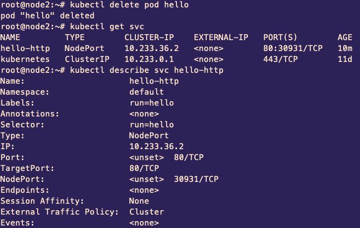

Основы Kubernetes

Запуск
kubectl run hello \
--image=tutum/hello-world \
--port=80 \
--generator=run-pod/v1
docker ps?
kubectl get pods!


kubectl expose pod hello --type=NodePort --name hello-http
kubectl describe svc hello-http

Endpoints
hello-pod.yaml
apiVersion: v1
kind: Pod
metadata:
name: hello
labels:
creation_method: yaml
env: prod
run: hello
spec:
containers:
- image: tutum/hello-world
name: hello-world
ports:
- containerPort: 80
protocol: TCPkubectl apply -f hello-pod.yaml